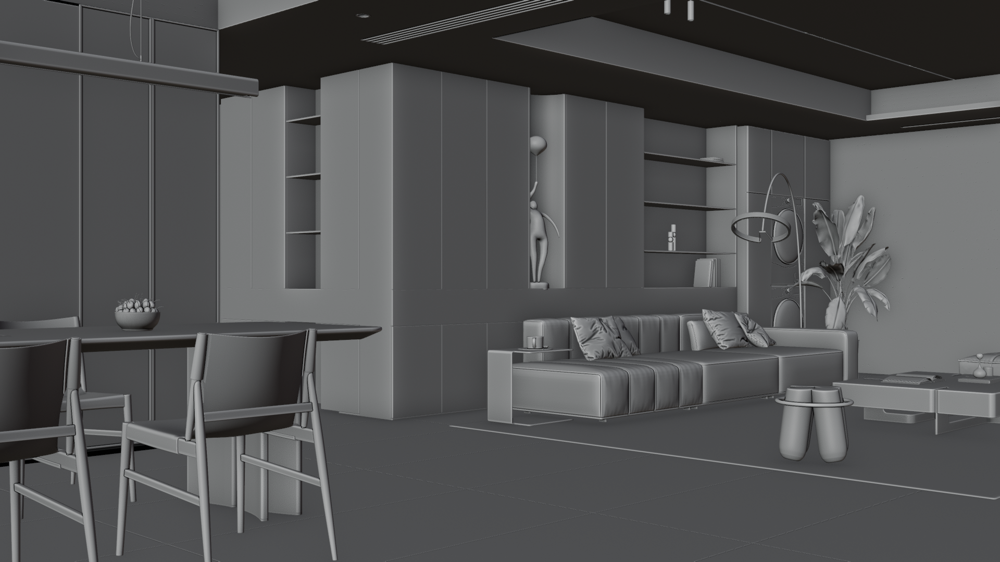
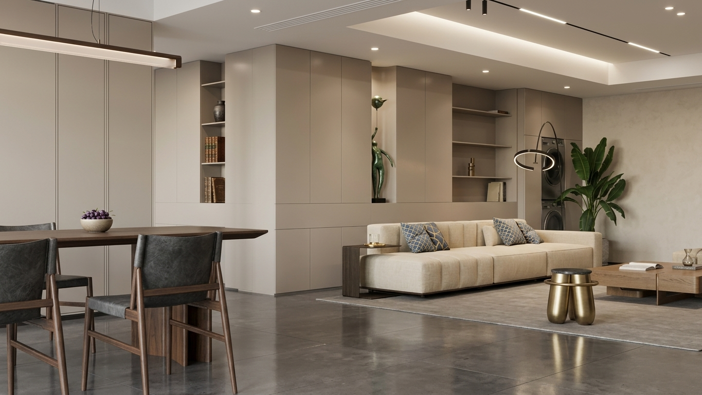
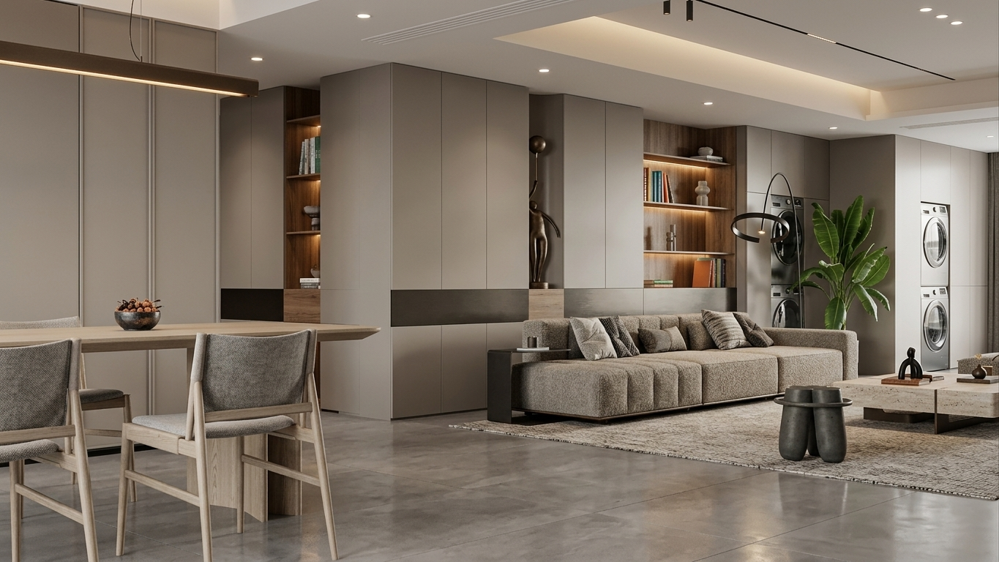
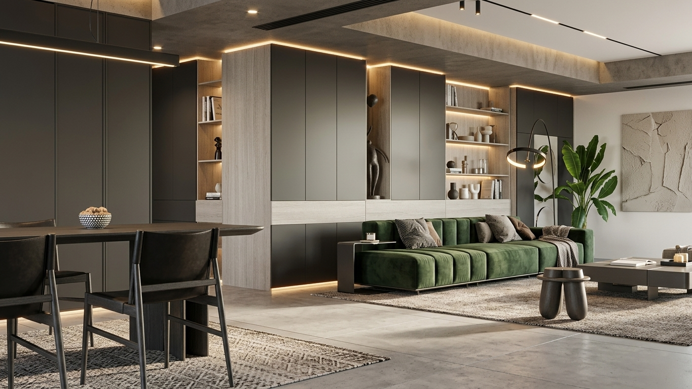
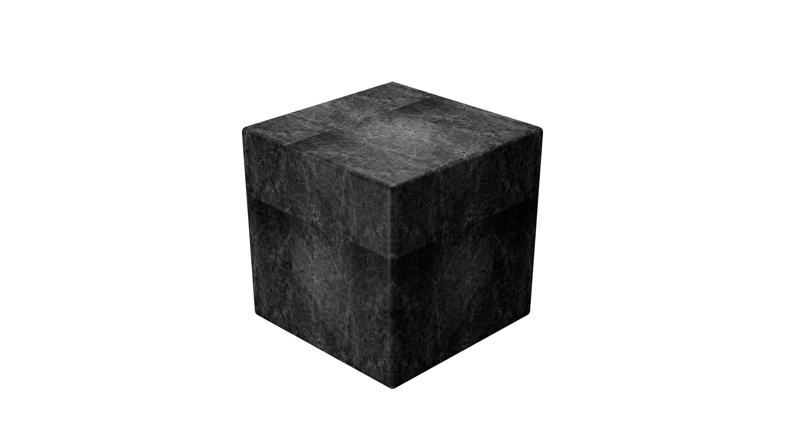
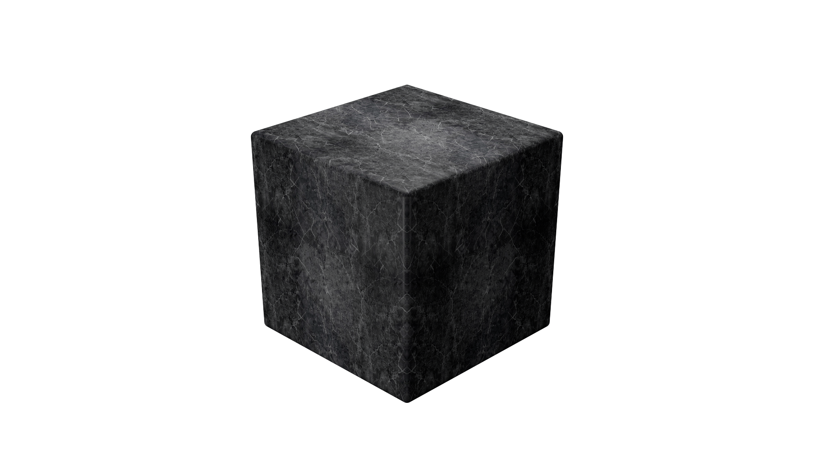
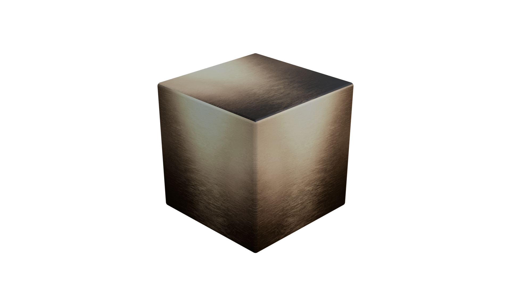
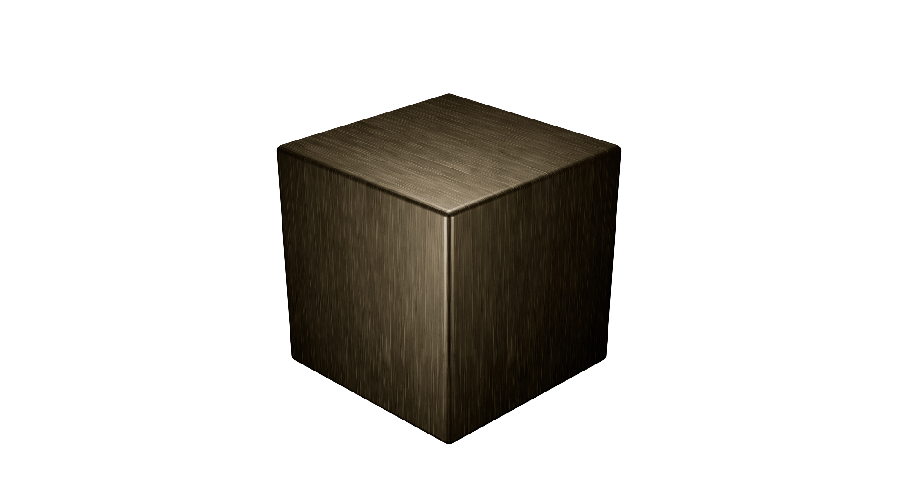
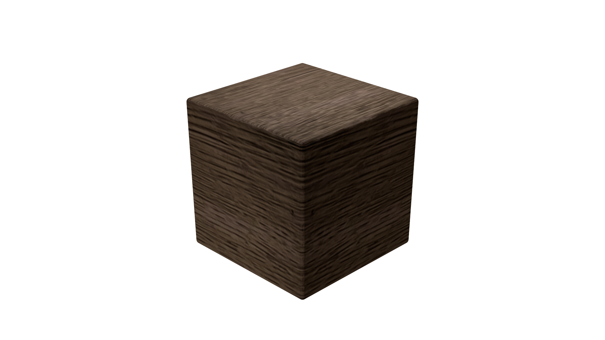
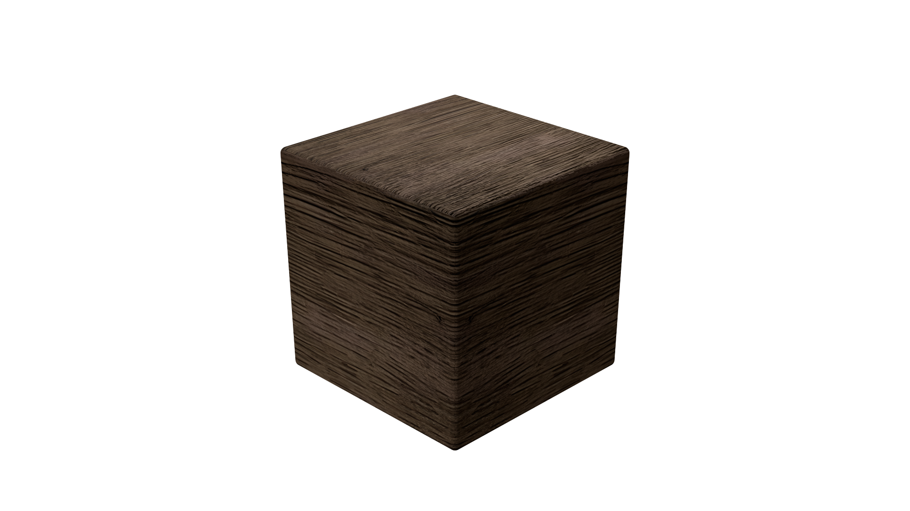

Turn any render into real materials.
Pixel AI analyzes renders and images, then helps generate editable materials, seamless textures, PBR maps, and production-ready material workflows directly inside Blender.
A complete AI material workflow.
Designed for artists who want faster material creation without leaving Blender. Use AI to generate, analyze, refine, tile, upscale, and clean textures for professional rendering.
Material From Rendering
Extract material information from a finished render and rebuild usable material assets for your Blender scene.
AI Rendering
Compare the original visual against AI-generated rendering stages in one scroll-driven image stack.

ORIGINAL
AI RENDER 01
AI RENDER 02
AI RENDER 03Generate PBR
Create essential PBR maps including albedo, roughness, normal, height, metallic, and AO.
Text to Material
Turn material prompts into finished textures through an automatic particle reconstruction preview.
Seamless Tiling
Preview generated materials as continuous surfaces before applying them to large architectural scenes.


Flatten Lighting
Remove baked shadows and lighting so albedo maps stay clean inside physically based materials.


Upscale
Recover crisp textile detail from soft source material and prepare textures for close-up rendering.


From visual reference to PBR material.
Show customers the transformation clearly: input image, AI analysis, generated maps, then final material preview.
Generated Material Preview
A cinematic material sphere helps customers instantly understand the output quality.
PBR Map Output
Present generated maps in a clean grid for a premium technical feel.